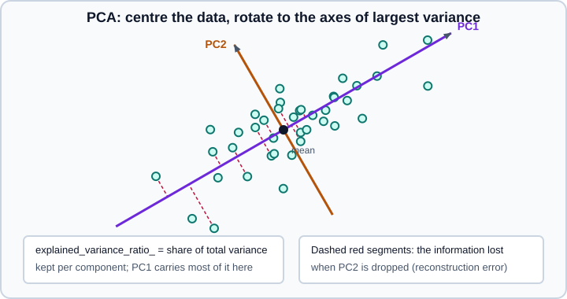

PCA, TruncatedSVD & NMF
|
This content was generated with the assistance of AI and should be verified against the official documentation before being relied on in production. |
Decomposition estimators express a data matrix \(X\) as a product of smaller matrices, which compresses the data, removes noise, reveals structure and gives lower-dimensional inputs to other models. This page covers the three that are used most often: PCA, TruncatedSVD and NMF. This page targets scikit-learn 1.9, with NumPy 2.5 and pandas 3.1, and it was checked in October 2026. Examples target Python 3.13 or 3.14. Every example was run on Python 3.13.18, NumPy 2.5.4, pandas 3.1.0 and scikit-learn 1.9.1; the printed output is real and varies slightly with other versions and platforms. The package is installed as scikit-learn and imported as sklearn. The linear algebra behind these methods is explained in NumPy linear algebra; nonlinear projections for visualisation are on Manifold Learning, and feature selection (keeping a subset of the original columns instead of building new ones) is on Feature Selection.
All the transformers here follow the standard API: fit learns the components from training data, transform projects any data onto them, fit_transform does both, and inverse_transform maps back to the original space. The components are stored in components_ (one row per component), so they can be fitted in a Pipeline, cross-validated and combined with column transformers like any other step.
Choosing a decomposition
| Estimator | What it finds | Use it when |
|---|---|---|
|
Orthogonal directions of maximum variance, after centring |
Dense numeric data; denoising, visualisation, decorrelation, speeding up other models |
|
The same, from mini-batches |
The data does not fit in memory |
|
Principal directions in a kernel-induced feature space |
Nonlinear structure; small to medium data |
|
Components with few non-zero loadings |
Interpretability |
|
Largest singular vectors, without centring |
Sparse matrices such as TF-IDF; latent semantic analysis |
|
Non-negative factors |
Non-negative data such as counts, spectra or images; topic modelling |
|
A linear model with per-feature noise variance |
A probabilistic latent factor model |
|
Statistically independent components |
Separating mixed signals |
|
An overcomplete dictionary and sparse codes |
Sparse representations |
|
Topic mixtures for documents of word counts |
Probabilistic topic modelling |
PCA
Principal component analysis finds a new orthogonal basis for the data. The first principal component is the direction along which the centred data has the greatest variance, the second is the direction of greatest variance orthogonal to the first, and so on. Keeping the first few components gives the best low-rank approximation of the data in the least-squares sense. In scikit-learn the model centres the data (subtracts the training mean) and computes a singular value decomposition; it does not scale the features.

Writing the centred data as \(X_c = U \Sigma V^\top\), the rows of \(V^\top\) are the components (components_), the squared singular values divided by \(n - 1\) are the variances along them (explained_variance_), and the projected data, the scores, are \(X_c V\). The sections below use the wine data set (178 samples, 13 chemical measurements), whose features have very different scales.
import numpy as np
import pandas as pd
from sklearn.datasets import load_wine
from sklearn.decomposition import PCA
from sklearn.pipeline import make_pipeline
from sklearn.preprocessing import StandardScaler
wine = load_wine()
X = wine.data
print(X.shape, "feature std (first four):", X.std(axis=0)[:4].round(2), "proline std:", X[:, -1].std().round(1))
raw = PCA(n_components=3).fit(X)
print("raw explained variance ratio:", raw.explained_variance_ratio_.round(3))
pipe = make_pipeline(StandardScaler(), PCA(n_components=3)).fit(X)
pca = pipe[-1]
print("scaled explained variance ratio:", pca.explained_variance_ratio_.round(3), "cumulative", pca.explained_variance_ratio_.cumsum().round(3))
print("components_ shape:", pca.components_.shape, "| singular values:", pca.singular_values_.round(2))
Z = pipe.transform(X)
print("scores shape:", Z.shape, "| column means:", Z.mean(axis=0).round(6) + 0.0)
print("score variances equal explained_variance_:", Z.var(axis=0, ddof=1).round(3), pca.explained_variance_.round(3))
loadings = pd.DataFrame(pca.components_.T, index=wine.feature_names, columns=["PC1", "PC2", "PC3"])
print(loadings.round(2).head(5))(178, 13) feature std (first four): [0.81 1.11 0.27 3.33] proline std: 314.0
raw explained variance ratio: [0.998 0.002 0. ]
scaled explained variance ratio: [0.362 0.192 0.111] cumulative [0.362 0.554 0.665]
components_ shape: (3, 13) | singular values: [28.94 21.08 16.04]
scores shape: (178, 3) | column means: [0. 0. 0.]
score variances equal explained_variance_: [4.732 2.511 1.454] [4.732 2.511 1.454]
PC1 PC2 PC3
alcohol 0.14 0.48 -0.21
malic_acid -0.25 0.22 0.09
ash -0.00 0.32 0.63
alcalinity_of_ash -0.24 -0.01 0.61
magnesium 0.14 0.30 0.13The first result is the central pitfall of PCA: on raw data a single feature (proline, with a standard deviation of 314) carries 99.8 per cent of the variance because of its units, so the first component is just "proline". After standardising, the variance is spread (36 per cent in the first component) and the components mix many features. Scale before PCA unless the features share a unit and their variance is meaningful. The scores are uncorrelated, have zero mean, and their variances equal explained_variance_. The loadings in components_ tell you which original features drive each component; the sign of a component is arbitrary, so a flipped sign between versions or data sets is not an error.
Choosing the number of components
n_components accepts several forms:
-
An integer keeps that many components (at most
min(n_samples, n_features)). -
A float between 0 and 1 keeps the smallest number of components whose cumulative explained variance exceeds it. This requires
svd_solver="full". -
"mle"estimates the dimension with Minka’s maximum-likelihood method, and also requires the full solver. -
Nonekeeps all components.
from sklearn.datasets import load_wine
X = StandardScaler().fit_transform(load_wine().data)
print("components for 90% of the variance:", PCA(n_components=0.90, svd_solver="full").fit(X).n_components_)
print("Minka's MLE estimate:", PCA(n_components="mle").fit(X).n_components_)
for k in (2, 5, 13):
p = PCA(n_components=k).fit(X)
reconstruction = p.inverse_transform(p.transform(X))
print(k, "components, reconstruction MSE:", round(float(((X - reconstruction) ** 2).mean()), 4))
white = PCA(n_components=3, whiten=True).fit(X)
print("whitened score variances:", white.transform(X).var(axis=0, ddof=1).round(3))
print("average log-likelihood per sample:", round(PCA(n_components=3).fit(X).score(X), 3))components for 90% of the variance: 8
Minka's MLE estimate: 12
2 components, reconstruction MSE: 0.4459
5 components, reconstruction MSE: 0.1984
13 components, reconstruction MSE: 0.0
whitened score variances: [1. 1. 1.]
average log-likelihood per sample: -15.702Source: sklearn.decomposition.PCA
Related tools:
-
A scree plot of
explained_variance_ratio_(look for an elbow) or the cumulative curve are the standard visual aids; the "enough variance" rule is simple but ignores what the components are for. When PCA feeds a supervised model, choosen_componentsby cross-validation of the whole pipeline, as in the digits example below. -
whiten=Truerescales each score to unit variance. It removes the relative variance information, which can help downstream models that assume isotropic input (an RBF SVM, k-means) and hurt others. -
inverse_transformprojects back to the original space and loses exactly the discarded variance; the reconstruction error is a measure of what was thrown away. Withsvd_solver="randomized"it is not the exact inverse oftransformeven without whitening. -
scoreandscore_samplesgive the log-likelihood under the probabilistic PCA model, which is usable in model selection by cross-validation.
Solvers and sparse input
svd_solver |
Behaviour |
|---|---|
|
|
|
Exact LAPACK SVD through SciPy, truncated afterwards. |
|
Eigendecomposition of the covariance matrix (added in 1.5). Very fast for many samples and few features; squares the condition number, so it is less numerically stable, and it needs memory for the covariance matrix. |
|
Truncated SVD through ARPACK; requires |
|
Halko et al. randomized SVD, the fastest option when only a few components of a large matrix are needed. Controlled by |
Source: sklearn.decomposition.PCA
for solver in ["auto", "full", "covariance_eigh", "arpack", "randomized"]:
m = PCA(n_components=3, svd_solver=solver, random_state=0).fit(X)
print(f"{solver:16s} used {m._fit_svd_solver:16s} {m.explained_variance_ratio_.round(4)}")auto used covariance_eigh [0.362 0.1921 0.1112]
full used full [0.362 0.1921 0.1112]
covariance_eigh used covariance_eigh [0.362 0.1921 0.1112]
arpack used arpack [0.362 0.1921 0.1112]
randomized used randomized [0.362 0.1921 0.1112]Source: sklearn.decomposition.PCA
The leading underscore on _fit_svd_solver marks it as private; it is shown only to reveal what "auto" chose, and it can change between versions. Here, 178 samples is more than ten times 13 features, so auto picked the covariance solver; all five agree on the answer.
PCA also accepts SciPy sparse matrices with two solvers. Sparse data is not centred (that would make it dense), and the solvers handle the implicit centring internally:
import scipy.sparse as sp
from sklearn.decomposition import TruncatedSVD
S = sp.random(300, 40, density=0.2, format="csr", random_state=0)
for solver in ["auto", "arpack", "covariance_eigh", "full", "randomized"]:
try:
m = PCA(3, svd_solver=solver, random_state=0).fit(S)
print(f"{solver:16s} ok, solver used: {m._fit_svd_solver}")
except TypeError as error:
print(f"{solver:16s} TypeError: {str(error)[:70]}...")
X = np.random.default_rng(0).normal(size=(50, 6)) * np.array([5, 3, 2, 1, 1, 1])
Xc = X - X.mean(axis=0)
a = TruncatedSVD(3, algorithm="arpack", random_state=0).fit(Xc).singular_values_
b = PCA(3, svd_solver="full").fit(X).singular_values_
print("TruncatedSVD on centred data equals PCA:", np.allclose(a, b))auto ok, solver used: arpack
arpack ok, solver used: arpack
covariance_eigh ok, solver used: covariance_eigh
full TypeError: PCA only support sparse inputs with the "arpack" and "covariance_eigh"...
randomized TypeError: PCA only support sparse inputs with the "arpack" and "covariance_eigh"...
TruncatedSVD on centred data equals PCA: TrueThe last line is the relationship between the two estimators: truncated SVD on centred data is PCA. For sparse text matrices, TruncatedSVD is the usual choice and is described below.
PCA before a supervised model
PCA is often used as a compression step ahead of a classifier. Fit it inside a pipeline so that cross-validation fits the scaler and the projection on each training fold only, which avoids leakage (see Common Pitfalls). The digits data set has 64 pixel features:
import numpy as np
from sklearn.datasets import load_digits, make_circles
from sklearn.decomposition import IncrementalPCA, KernelPCA
from sklearn.linear_model import LogisticRegression
from sklearn.model_selection import cross_val_score
X, y = load_digits(return_X_y=True)
print(X.shape)
exact = PCA(n_components=10).fit(X)
randomized = PCA(n_components=10, svd_solver="randomized", random_state=0).fit(X)
print("randomized vs exact, largest difference in variance ratio:", np.abs(randomized.explained_variance_ratio_ - exact.explained_variance_ratio_).max().round(6))
ipca = IncrementalPCA(n_components=10, batch_size=200)
for chunk in np.array_split(X, 9):
ipca.partial_fit(chunk)
print("incremental vs exact, largest difference:", np.abs(ipca.explained_variance_ratio_ - exact.explained_variance_ratio_).max().round(5),
"| samples seen:", int(ipca.n_samples_seen_))
for k in (5, 10, 20, 40, 64):
model = make_pipeline(StandardScaler(), PCA(n_components=k), LogisticRegression(max_iter=2000))
print(f"PCA({k:2d}) + LogisticRegression: {cross_val_score(model, X, y, cv=5).mean():.3f}")(1797, 64)
randomized vs exact, largest difference in variance ratio: 0.0
incremental vs exact, largest difference: 0.00082 | samples seen: 1797
PCA( 5) + LogisticRegression: 0.771
PCA(10) + LogisticRegression: 0.840
PCA(20) + LogisticRegression: 0.899
PCA(40) + LogisticRegression: 0.914
PCA(64) + LogisticRegression: 0.920Accuracy rises with the number of components and flattens: 40 of the 64 dimensions give 0.914 against 0.920 for all of them, so the extra 24 carry little useful signal for a linear model. Keep in mind that PCA is unsupervised: it keeps the directions of largest variance, which are not necessarily the most predictive ones, so a supervised method such as LinearDiscriminantAnalysis or feature selection may do better for a given dimension. With exactly 10 components on this data the randomized solver reproduces the exact ratios to six decimals.
Variants
-
IncrementalPCAprocesses mini-batches withpartial_fit, or anumpy.memmapthroughfit, so memory depends on the batch size rather than the number of rows. It centres but does not scale, and approximates PCA closely (difference below 0.001 in the example above). Each batch must have at leastn_componentsrows. -
Randomized PCA (
svd_solver="randomized") is the right choice for wide data when only a few components are needed (images, genomics): the cost drops from the exact method’s \(O(n_{\max}^2 \cdot n_{\min})\) to \(O(n_{\max}^2 \cdot n_{\text{ components }})\). -
SparsePCAandMiniBatchSparsePCAadd an L1 penalty so that components have few non-zero loadings, which are easier to interpret;MiniBatchSparsePCAis faster but less accurate and has nopartial_fit. -
KernelPCAperforms PCA in a feature space defined by a kernel ("rbf","poly","cosine", a precomputed kernel). It captures non-linear structure but stores ann x nkernel matrix, has no direct inverse unlessfit_inverse_transform=Trueand itseigen_solvercan be"dense","arpack"or"randomized".
Xc, yc = make_circles(400, factor=0.3, noise=0.05, random_state=0)
linear = PCA(2).fit_transform(Xc)
kernel = KernelPCA(2, kernel="rbf", gamma=10).fit_transform(Xc)
for name, Z in [("linear PCA", linear), ("RBF kernel PCA", kernel)]:
print(name, "- accuracy using only the first component:", round(cross_val_score(LogisticRegression(), Z[:, :1], yc, cv=5).mean(), 3))linear PCA - accuracy using only the first component: 0.45
RBF kernel PCA - accuracy using only the first component: 0.755Two concentric circles cannot be told apart along any straight direction, so linear PCA stays near chance, while the first RBF kernel component separates most of the points. gamma is a hyperparameter that must be tuned.
TruncatedSVD and latent semantic analysis
TruncatedSVD computes only the \(k\) largest singular values and vectors of a matrix. Unlike PCA it does not centre the data, which keeps sparse matrices sparse and makes it usable on very large, high-dimensional sparse inputs. Applied to a TF-IDF term-document matrix it is called latent semantic analysis (LSA) or latent semantic indexing: each document is described by a few "concepts" instead of thousands of words, which helps with synonymy and polysemy and gives a dense representation that works well with cosine similarity.
For \(X \approx U_k \Sigma_k V_k^\top\), the transformed training data is \(U_k \Sigma_k\) and a new sample \(x\) is projected as \(x V_k\). The usual LSA recipe, recommended in the user guide, is TF-IDF with sublinear term frequency and inverse document frequency, then TruncatedSVD, then Normalizer so that dot products are cosine similarities.
import numpy as np
from sklearn.decomposition import PCA, TruncatedSVD
from sklearn.feature_extraction.text import TfidfVectorizer
from sklearn.pipeline import make_pipeline
from sklearn.preprocessing import Normalizer
docs = ["the cat sat on the mat", "a cat and a dog played", "dogs and cats are pets",
"stock markets fell sharply today", "investors sold shares as markets fell",
"the central bank raised interest rates", "pets need food and care", "banks and markets react to rates"]
lsa = make_pipeline(TfidfVectorizer(sublinear_tf=True, stop_words="english"),
TruncatedSVD(n_components=2, random_state=0), Normalizer(copy=False))
Z = lsa.fit_transform(docs)
print(np.round(Z, 2) + 0.0)
svd = lsa[1]
print("explained variance ratio:", svd.explained_variance_ratio_.round(3), "singular values:", svd.singular_values_.round(2))
terms = np.array(lsa[0].get_feature_names_out())
for i, component in enumerate(svd.components_):
print("component", i, terms[np.argsort(-np.abs(component))[:4]])
tfidf_matrix = lsa[0].transform(docs)
print(type(tfidf_matrix).__name__, tfidf_matrix.shape, "stored values:", tfidf_matrix.nnz)
PCA(2, svd_solver="arpack").fit(tfidf_matrix) # sparse input works with arpack
print("PCA accepts the sparse matrix with svd_solver='arpack'")[[0. 1.]
[0. 1.]
[0. 0.]
[1. 0.]
[1. 0.]
[1. 0.]
[0. 0.]
[1. 0.]]
explained variance ratio: [0.114 0.141] singular values: [1.19 1.12]
component 0 ['markets' 'fell' 'rates' 'react']
component 1 ['cat' 'mat' 'sat' 'played']
csr_matrix (8, 25) stored values: 31
PCA accepts the sparse matrix with svd_solver='arpack'Source: scikit-learn user guide, Truncated singular value decomposition and latent semantic analysis
The two latent dimensions separate finance texts (component 0, about markets and rates) from pet texts (component 1, cat, mat, played). Two documents ("dogs and cats are pets" and "pets need food and care") get the vector [0, 0]: they share the word "pets" and little else with the rest of the corpus, so they form a third concept that a two-component model does not represent. Eight documents are far too few for LSA to generalise; use thousands. Two details: explained_variance_ratio_ need not be decreasing for TruncatedSVD, since the data is not centred (here the second component has the larger ratio), and the signs of the singular vectors are arbitrary. Also keep sublinear_tf=True and use_idf=True on the vectoriser, which bring the values closer to the Gaussian assumption of the method. Text vectorisers are covered on Feature Extraction: Text, Dicts & Hashing.
For large sparse matrices the default algorithm="randomized" (with n_iter=5 power iterations) is fast; "arpack" is exact but slower. The number of power iterations trades accuracy for time when the singular values decay slowly.
NMF
Non-negative matrix factorization approximates a non-negative matrix \(X\) of shape (n_samples, n_features) as the product of two non-negative matrices \(W\) ((n_samples, n_components), returned by transform) and \(H\) (components_):
\[X \approx W H, \quad W \ge 0, \; H \ge 0\]
Because nothing can be subtracted, the components add up to the data, and tend to be parts: strokes of a digit, topics of a document collection, spectra of pure substances. The factors are easier to interpret than PCA components, which have signs and cancel. The price is that the problem is non-convex, the result depends on the initialisation and solver, and the input must contain no negative values.
import numpy as np
from sklearn.decomposition import NMF
from sklearn.feature_extraction.text import TfidfVectorizer
docs = ["the cat sat on the mat with another cat", "a cat and a dog played in the garden", "dogs and cats are loved pets",
"stock markets fell sharply today", "investors sold shares as markets fell", "the central bank raised interest rates",
"pets need food and care from owners", "banks and markets react to interest rates", "my dog chased the cat",
"shares and stock prices rose after the bank decision"]
tfidf = TfidfVectorizer(stop_words="english")
V = tfidf.fit_transform(docs)
nmf = NMF(n_components=2, init="nndsvda", random_state=0, max_iter=500).fit(V)
W = nmf.transform(V)
terms = np.array(tfidf.get_feature_names_out())
print("document weights (first four):\n", W[:4].round(2))
print("smallest values:", W.min(), nmf.components_.min(), "| reconstruction_err_:", round(nmf.reconstruction_err_, 4), "| iterations:", nmf.n_iter_)
for i, component in enumerate(nmf.components_):
print("topic", i, terms[np.argsort(-component)[:5]])
print("new text:", nmf.transform(tfidf.transform(["a cat and the bank"])).round(2))document weights (first four):
[[0.54 0. ]
[0.61 0. ]
[0. 0. ]
[0. 0.58]]
smallest values: 0.0 0.0 | reconstruction_err_: 2.5875 | iterations: 23
topic 0 ['cat' 'dog' 'chased' 'played' 'garden']
topic 1 ['markets' 'fell' 'shares' 'stock' 'rates']
new text: [[0.36 0.15]]Each topic is a row of components_; the highest weights name it. A new text is projected onto the fixed topics with transform; here a mixed sentence receives weight on both topics. The third document ("dogs and cats are loved pets") gets zero weight on both topics, because its words are not among the dominant words of either one; with such a small corpus this is expected. All values are non-negative and reconstruction_err_ is the Frobenius norm of X - WH.
Initialisation, solvers and regularisation
-
n_components. The default is"auto"(since 1.6; it wasNonebefore), which keeps as many components as features unlessWorHare supplied. Always set it explicitly. -
init.Noneselects"nndsvda"whenn_componentsdoes not exceedmin(n_samples, n_features)and"random"otherwise."nndsvd"(Boutsidis and Gallopoulos) gives sparse starting points; the basic variant puts many exact zeros in the factors, which the multiplicative-update solver can never change, so forsolver="mu"use"nndsvda"(zeros filled with the data mean) or"nndsvdar"(zeros filled with small random values)."random"scales random matrices bysqrt(X.mean() / n_components);"custom"takesWandHthat you provide. -
solver."cd"(coordinate descent, default) only optimises the Frobenius norm;"mu"(multiplicative update) optimises any beta divergence. -
beta_loss."frobenius"(default),"kullback-leibler"or"itakura-saito", or a float; only used withsolver="mu". The Kullback-Leibler divergence is common for counts and TF-IDF text. Values other than 2 (Frobenius) and 1 (Kullback-Leibler) are much slower, and Itakura-Saito (and any beta of 0 or below) require input without exact zeros. -
Regularisation.
alpha_Wandalpha_H("same"by default) set the strength of the penalty onWandH, andl1_ratiomixes L1 (sparsity, 1.0) and L2 (0.0). The L1 penalty drives more components to exactly zero. -
tolandmax_iter. The default of 200 iterations often stops before convergence on bigger data; aConvergenceWarningtells you, and raisingmax_iterfixes it.
import warnings
from sklearn.datasets import load_digits
from sklearn.decomposition import MiniBatchNMF
from sklearn.exceptions import ConvergenceWarning
X, _ = load_digits(return_X_y=True)
warnings.simplefilter("ignore", ConvergenceWarning) # 400 iterations are not always enough here
for init in ["random", "nndsvd", "nndsvda", "nndsvdar"]:
m = NMF(n_components=10, init=init, random_state=0, max_iter=400).fit(X)
print(f"init={init:9s} error {m.reconstruction_err_:.1f} iterations {m.n_iter_}")
print("share of exact zeros in components_ with nndsvd:", (NMF(10, init="nndsvd", random_state=0, max_iter=50).fit(X).components_ == 0).mean().round(2))
for alpha in (0.0, 0.1):
m = NMF(10, init="nndsvda", random_state=0, alpha_W=alpha, alpha_H="same", l1_ratio=1.0, max_iter=400).fit(X)
print(f"alpha {alpha}: share of zeros in components_ {(m.components_ < 1e-8).mean():.2f}, error {m.reconstruction_err_:.1f}")
kl = NMF(10, init="nndsvda", solver="mu", beta_loss="kullback-leibler", random_state=0, max_iter=400).fit(X)
print("Kullback-Leibler divergence loss:", round(kl.reconstruction_err_, 1), "iterations", kl.n_iter_)
mini = MiniBatchNMF(10, init="nndsvda", batch_size=256, random_state=0, max_iter=100).fit(X)
print("MiniBatchNMF Frobenius error:", round(mini.reconstruction_err_, 1))
try:
NMF(2).fit(np.array([[1.0, -1.0], [2.0, 3.0]]))
except ValueError as error:
print("ValueError:", error)init=random error 853.4 iterations 288
init=nndsvd error 855.9 iterations 400
init=nndsvda error 857.7 iterations 350
init=nndsvdar error 854.4 iterations 400
share of exact zeros in components_ with nndsvd: 0.58
alpha 0.0: share of zeros in components_ 0.61, error 857.7
alpha 0.1: share of zeros in components_ 0.75, error 1079.6
Kullback-Leibler divergence loss: 415.1 iterations 140
MiniBatchNMF Frobenius error: 915.7
ValueError: Negative values in data passed to NMF initialization.The four initialisations end at similar error but different iteration counts, which shows that the surface has many near-equivalent minima; set random_state and compare several seeds. The L1 penalty raises the share of exact zeros in the components from 61 to 75 per cent at the cost of a higher reconstruction error. The reconstruction errors of the Kullback-Leibler and Frobenius runs are on different scales and are not comparable. MiniBatchNMF (added in 1.1) uses online updates for large data and supports partial_fit.
Other decompositions
-
FactorAnalysisfits a Gaussian latent-factor model with a separate noise variance for every feature, so unlike PCA it does not assume equal noise; it can be a better denoiser when the noise is heteroscedastic. The user guide shows it combined with PCA for model selection of the number of components with cross-validated likelihood. -
FastICAseparates mixed signals into statistically independent sources (the cocktail-party problem). It is not normally used for dimensionality reduction, and the data must be whitened. -
DictionaryLearning,MiniBatchDictionaryLearningandSparseCoderlearn or take a dictionary of atoms and represent each sample as a sparse combination. -
LatentDirichletAllocationis a probabilistic topic model for count data with a variational Bayes solver and online updates.
Pitfalls and what changed
-
Not scaling before PCA lets the feature with the largest unit decide the result.
-
Fitting on all the data. Fit the scaler and the decomposition on the training set only (inside a
Pipeline), then transform the test set with the same objects; fitting PCA on the full data set leaks information into cross-validation. -
Interpreting component signs and orientation. The sign of a component is arbitrary and can flip between runs and versions, so never compare raw loadings across fits without aligning them.
-
Variance is not relevance. Directions of large variance may carry noise, and a small component may be the predictive one.
-
Centring sparse data with PCA is only available through the
"arpack"and"covariance_eigh"solvers; otherwise useTruncatedSVD. -
Negative values in NMF raise a
ValueError. Shift or clip the data only if that is meaningful; otherwise use PCA or TruncatedSVD. -
Convergence. NMF may stop at
max_iterwith aConvergenceWarning; do not ignore it blindly. -
Visualising with PCA shows only the directions of largest variance; for clusters or manifolds see Manifold Learning and cluster the data first with Clustering.
Some older statements no longer hold:
| Older code or advice | Current form | Since |
|---|---|---|
|
A |
1.5 |
PCA cannot take sparse input; use |
|
Observed in 1.9 |
|
|
1.1 |
|
|
1.6 |
|
|
1.0 |
|
Removed; use |
0.18 |
See also
-
Clustering, which often follows a PCA step.
-
Manifold Learning for t-SNE and other non-linear embeddings.
-
Feature Selection for keeping original columns.
-
Pipelines to chain scaling, decomposition and a model.
-
Feature Engineering for the wider picture of constructing inputs.
References
-
scikit-learn user guide, Decomposing signals in components: https://scikit-learn.org/stable/modules/decomposition.html
-
PCA: https://scikit-learn.org/stable/modules/generated/sklearn.decomposition.PCA.html -
IncrementalPCA: https://scikit-learn.org/stable/modules/generated/sklearn.decomposition.IncrementalPCA.html -
KernelPCA: https://scikit-learn.org/stable/modules/generated/sklearn.decomposition.KernelPCA.html -
TruncatedSVD: https://scikit-learn.org/stable/modules/generated/sklearn.decomposition.TruncatedSVD.html -
NMF: https://scikit-learn.org/stable/modules/generated/sklearn.decomposition.NMF.html -
MiniBatchNMF: https://scikit-learn.org/stable/modules/generated/sklearn.decomposition.MiniBatchNMF.html -
N. Halko, P. G. Martinsson and J. A. Tropp, "Finding structure with randomness", SIAM Review 53(2), 2011
-
C. Boutsidis and E. Gallopoulos, "SVD based initialization: a head start for nonnegative matrix factorization", Pattern Recognition 41(4), 2008
-
T. P. Minka, "Automatic choice of dimensionality for PCA", NIPS 2000